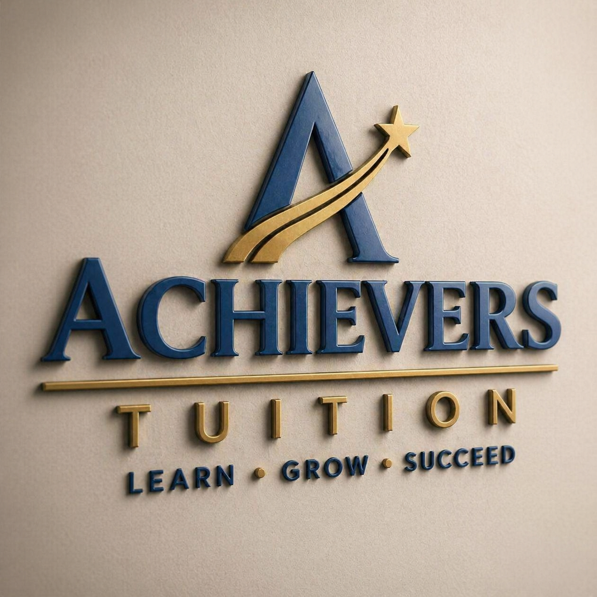
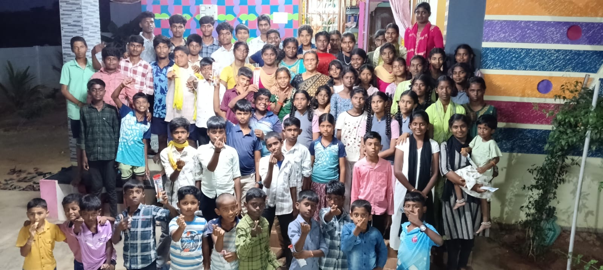

Achievers Tuition is where I studied, grew, and found happiness. From 10th to 12th, this place gave me knowledge, memories, and a new life.”

Achievers Tuition is where I studied, grew, and found happiness. From 10th to 12th, this place gave me knowledge, memories, and a new life.”
My name is Dharshini P, and I am going to share my tuition story. I first joined the tuition when I was in 10th grade. At that time, I had no skills and no knowledge. But my tuition akka, Jansi Rani V, taught me everything. She didn’t just teach me education, she taught me life — values like discipline, consistency, and how to face challenges. For three years, she taught me without taking any fees. To me, she is like a second mother. She has been a very important person in my life. Not only in studies, but she also guided me in my life and even helped me find solutions for my family problems. That tuition is an unforgettable part of my life. I love my tuition friends so much, and that place changed my life completely. My tuition akka, Jansi Rani V, is the one who shaped me into who I am today. Now I am studying in college. Even though there are many challenges in my college life and family life, I still have her guidance and support like a mother. This tuition is my first true happiness in life, and it will always remain an unforgettable memory in my journey.
